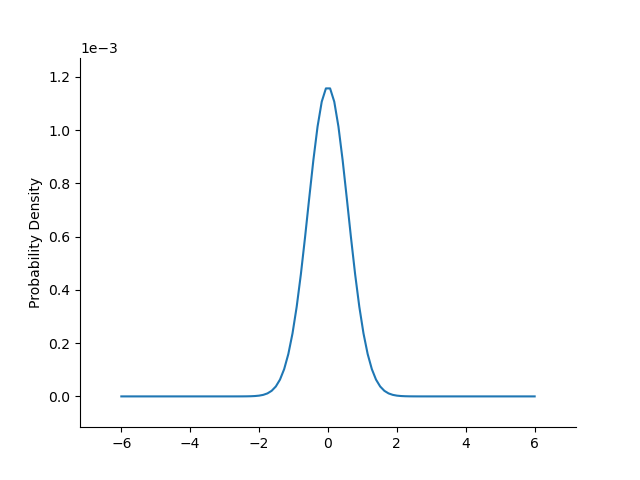
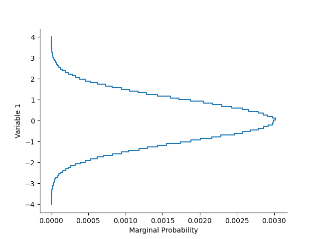
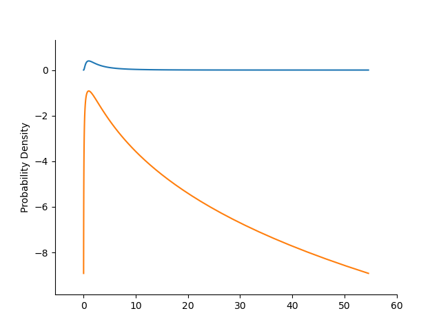
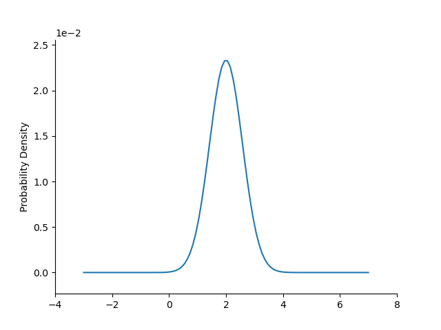

Note
Go to the end to download the full example code.
_summary_
from matplotlib import pyplot as plt
import numpy as np
from geobipy import Distribution, DataArray, RectilinearMesh2D, Histogram, get_prng
Create a histogram so we can test joint probabilities
x = DataArray(np.linspace(-4.0, 4.0, 100), 'Variable 1')
y = DataArray(np.linspace(-4.0, 4.0, 105), 'Variable 2')
mesh = RectilinearMesh2D(x_edges=x, y_edges=y)
# Instantiate
H = Histogram(mesh)
Update the histogram counts
H.update(np.random.randn(1000000), np.random.randn(1000000))
plt.figure()
H.plot()
prng = get_prng()

Seed: 233540890703648031797604111141088677904
dist = Distribution(‘uniform’, 0.0, 1.0, prng=prng)
# plt.figure()
# dist.plot_pdf()
# dist.plot_pdf(log=True)
# p = H.compute_probability(dist, axis=0)
# #%%
# dist = Distribution('normal', 0.0, 1.0, prng=prng)
# plt.figure()
# dist.plot_pdf()
# dist.plot_pdf(log=True)
# print(H.compute_probability(dist, axis=0))
Multivariate normal
dist = Distribution('mvnormal', [-2, 0, 2], np.diag([1.0, 1.0, 1.0]), prng=prng)
plt.figure()
dist.plot_pdf()
p = H.compute_probability(dist, axis=0)
plt.figure()
p.plot()


0% (0 of 99) | | Elapsed Time: 0:00:00 ETA: --:--:--
100% (99 of 99) |#############################################################################################| Elapsed Time: 0:00:00 Time: 0:00:00
False
x=StatArray([1.42815830e-06, 2.25661331e-06, 1.97004466e-06, 3.08667305e-06,
5.51599093e-06, 5.79182726e-06, 6.78963453e-06, 1.13116718e-05,
1.20697598e-05, 1.71971110e-05, 1.98755962e-05, 2.89615917e-05,
3.42745993e-05, 4.14913184e-05, 5.14408858e-05, 6.44107147e-05,
8.81848428e-05, 1.05185074e-04, 1.30475440e-04, 1.61350697e-04,
1.97031764e-04, 2.32095640e-04, 2.63702632e-04, 3.26131139e-04,
3.91179957e-04, 4.60518580e-04, 5.36892936e-04, 6.24214409e-04,
7.08197279e-04, 8.30494787e-04, 9.50478803e-04, 1.04100437e-03,
1.18554618e-03, 1.30105770e-03, 1.43483386e-03, 1.55423923e-03,
1.74400703e-03, 1.88484507e-03, 2.01083180e-03, 2.16493042e-03,
2.28503165e-03, 2.46187790e-03, 2.57948196e-03, 2.68281514e-03,
2.78787276e-03, 2.85930012e-03, 2.92201428e-03, 2.98053643e-03,
2.99096036e-03, 2.99154467e-03, 3.02459271e-03, 2.97829744e-03,
2.91707726e-03, 2.85661488e-03, 2.78833420e-03, 2.65818202e-03,
2.56919719e-03, 2.42884585e-03, 2.29825675e-03, 2.16687871e-03,
2.04660909e-03, 1.87740732e-03, 1.72386901e-03, 1.60654191e-03,
1.42971204e-03, 1.28742604e-03, 1.16925892e-03, 1.05760793e-03,
9.47669424e-04, 8.22290251e-04, 7.38190804e-04, 6.25808761e-04,
5.27374071e-04, 4.57098213e-04, 3.88447939e-04, 3.35314153e-04,
2.88098995e-04, 2.30045461e-04, 1.89724141e-04, 1.49737600e-04,
1.25281107e-04, 1.06953678e-04, 8.20883293e-05, 7.07667483e-05,
5.64129093e-05, 4.62624794e-05, 3.67595248e-05, 2.70143929e-05,
1.87703550e-05, 1.74139752e-05, 1.25355350e-05, 9.99955568e-06,
7.40131129e-06, 5.67713674e-06, 5.07602289e-06, 3.54686376e-06,
1.56031563e-06, 1.36896397e-06, 1.15543425e-06, 1.15543425e-06]) y=StatArray([-4. , -3.91919192, -3.83838384, -3.75757576,
-3.67676768, -3.5959596 , -3.51515152, -3.43434343,
-3.35353535, -3.27272727, -3.19191919, -3.11111111,
-3.03030303, -2.94949495, -2.86868687, -2.78787879,
-2.70707071, -2.62626263, -2.54545455, -2.46464646,
-2.38383838, -2.3030303 , -2.22222222, -2.14141414,
-2.06060606, -1.97979798, -1.8989899 , -1.81818182,
-1.73737374, -1.65656566, -1.57575758, -1.49494949,
-1.41414141, -1.33333333, -1.25252525, -1.17171717,
-1.09090909, -1.01010101, -0.92929293, -0.84848485,
-0.76767677, -0.68686869, -0.60606061, -0.52525253,
-0.44444444, -0.36363636, -0.28282828, -0.2020202 ,
-0.12121212, -0.04040404, 0.04040404, 0.12121212,
0.2020202 , 0.28282828, 0.36363636, 0.44444444,
0.52525253, 0.60606061, 0.68686869, 0.76767677,
0.84848485, 0.92929293, 1.01010101, 1.09090909,
1.17171717, 1.25252525, 1.33333333, 1.41414141,
1.49494949, 1.57575758, 1.65656566, 1.73737374,
1.81818182, 1.8989899 , 1.97979798, 2.06060606,
2.14141414, 2.22222222, 2.3030303 , 2.38383838,
2.46464646, 2.54545455, 2.62626263, 2.70707071,
2.78787879, 2.86868687, 2.94949495, 3.03030303,
3.11111111, 3.19191919, 3.27272727, 3.35353535,
3.43434343, 3.51515152, 3.5959596 , 3.67676768,
3.75757576, 3.83838384, 3.91919192, 4. ])
dist = Distribution('lognormal', 1.0, 1.0, linearSpace=True, prng=prng)
plt.figure()
dist.plot_pdf()
dist.plot_pdf(log=True)
dist = Distribution('mvlognormal', np.r_[1.0, 2.0, 3.0], np.r_[1.0, 1.0, 1.0], prng=prng)
plt.figure()
dist.plot_pdf()
plt.show()


Total running time of the script: (0 minutes 5.120 seconds)